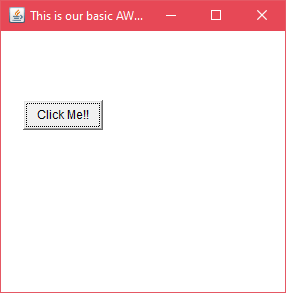
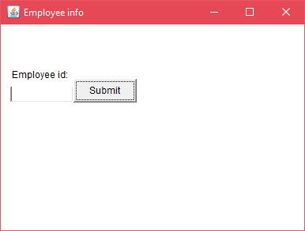

Container in Java AWT
The Container is a component in AWT that can contain another components like buttons, textfields, labels etc. The classes that extends Container class are known as container such as Frame, Dialog, and Panel.
It is basically a screen where the where the components are placed at their specific locations. Thus it contains and controls the layout of components.
Note: A container itself is a component (see the above diagram), therefore we can add a container inside container.
Types of Containers
There are four types of containers in Java AWT:
- Window
- Panel
- Frame
- Dialog
Window
The window is the container that have no borders and menu bars. You must use frame, dialog or another window for creating a window. We need to create an instance of Window class to create this container.
Panel
The Panel is the container that doesn't contain title bar, border or menu bar. It is generic container for holding the components. It can have other components like button, text field etc. An instance of Panel class creates a container, in which we can add components.
Frame
The Frame is the container that contain title bar and border and can have menu bars. It can have other components like button, text field, scrollbar etc. Frame is most widely used container while developing an AWT application.
Useful Methods of Component Class
| Method | Description |
|---|---|
| public void add(Component c) | Inserts a component on this component. |
| public void setSize(int width,int height) | Sets the size (width and height) of the component. |
| public void setLayout(LayoutManager m) | Defines the layout manager for the component. |
| public void setVisible(boolean status) | Changes the visibility of the component, by default false. |
Java AWT Example
To create simple AWT example, you need a frame. There are two ways to create a GUI using Frame in AWT.
- By extending Frame class (inheritance)
- By creating the object of Frame class (association)
AWT Example by Inheritance
Let's see a simple example of AWT where we are inheriting Frame class. Here, we are showing Button component on the Frame.
AWTExample1.java
// importing Java AWT class
import java.awt.*;
// extending Frame class to our class AWTExample1
public class AWTExample1 extends Frame {
// initializing using constructor
AWTExample1() {
// creating a button
Button b = new Button("Click Me!!");
// setting button position on screen
b.setBounds(30,100,80,30);
// adding button into frame
add(b);
// frame size 300 width and 300 height
setSize(300,300);
// setting the title of Frame
setTitle("This is our basic AWT example");
// no layout manager
setLayout(null);
// now frame will be visible, by default it is not visible
setVisible(true);
}
// main method
public static void main(String args[]) {
// creating instance of Frame class
AWTExample1 f = new AWTExample1();
}
}
The setBounds(int x-axis, int y-axis, int width, int height) method is used in the above example that sets the position of the awt button.
Output:
AWT Example by Association
Let's see a simple example of AWT where we are creating instance of Frame class. Here, we are creating a TextField, Label and Button component on the Frame.
AWTExample2.java
// importing Java AWT class
import java.awt.*;
// class AWTExample2 directly creates instance of Frame class
class AWTExample2 {
// initializing using constructor
AWTExample2() {
// creating a Frame
Frame f = new Frame();
// creating a Label
Label l = new Label("Employee id:");
// creating a Button
Button b = new Button("Submit");
// creating a TextField
TextField t = new TextField();
// setting position of above components in the frame
l.setBounds(20, 80, 80, 30);
t.setBounds(20, 100, 80, 30);
b.setBounds(100, 100, 80, 30);
// adding components into frame
f.add(b);
f.add(l);
f.add(t);
// frame size 300 width and 300 height
f.setSize(400,300);
// setting the title of frame
f.setTitle("Employee info");
// no layout
f.setLayout(null);
// setting visibility of frame
f.setVisible(true);
}
// main method
public static void main(String args[]) {
// creating instance of Frame class
AWTExample2 awt_obj = new AWTExample2();
}
}
download this example
Output:
Java's Abstract Window Toolkit (AWT) provides a set of classes for creating graphical user interfaces and painting graphics.